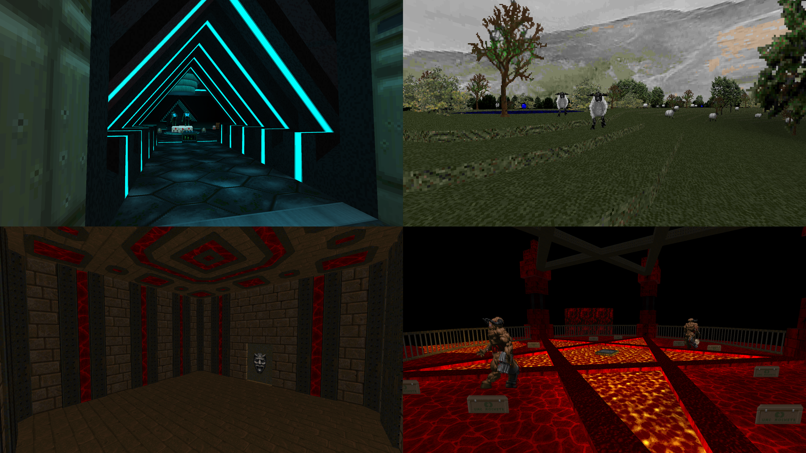

DOWNLOAD LINKS


| Year | 2023 |
| IWAD | Doom II |
| Source port | GZDoom |
| Game mode(s) | Single-player |
| Map(s) | MAP01 |
My Dick Is In This Wall Part 2 is a single-map GZDoom wad that was made over the course of the turn between 2022 and 2023. Spearheaded
by Major Arlene, the map was originally made for Bridgeburner's 24-hour New Year's stream by 18 participants, one of whom was
Yours Truly. Each participating mapper had an hour to make a section for the map and then had to pass it on to the next person. The end result
is a hell (heh) of a Frankenstein's monster of a map with many flavors of gameplay and silliness in one probably not-so-neat package.
As for me, I made the overdetailed elevator towards the end of the map. Yes, I actually spent my hour making a single elevator. 'Nuff said.